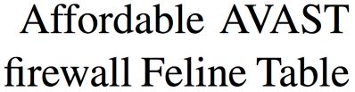
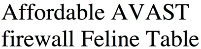

What is LaTeX?
- LaTeX is a system for making nicely typeset documents.
- It separates the actual content from the layout
- you write the text THEN typeset to format it
- c.f. WYSIWYG editors like MS Word
Why Choose LaTeX?
- The output looks great -- more professional than MS office
- Text is formatted as a whole, rather than as individual characters
Why Choose LaTeX?
LaTeX:  Word: 
Why Choose LaTeX?
- You can focus on the actual writing, rather than the formatting
- When you DO come to do the formatting, it's easy to RELIABLY make global changes
Other great things about LaTeX
- You can get a lot of control with little effort
- It's independent of your computer’s platform -- you can open tex files on any system AND it’s free.
- Free as in speech and free as in beer
Other great things about LaTeX
- Archival.
- Your document should still compile in 50 years time.
- In the worst case, source is plain text
- TeX was originally written in 1978, original TeX documents still compile perfectly.
- Is this the case with Word 97? Wordstar? Lotus Notes?
- Your document should still compile in 50 years time.
Other great things about LaTeX
- The output is trustworthy and consistent
- You won't get random changes of font
- When you change the document settings, it changes them everywhere
- So it won't matter if you forget to select say your figure captions
- You can automatically create your table of contents AND have it link to the right parts of your document
Other great things about LaTeX
- Numbering is done automatically
- You can shuffle around pieces of your document without worrying about the order
- Things that update automatically:
- section/chapter numbering/TOC
- Figures/tables/schemes (also known as "floats")
- Equations and compounds -- you can even get automatic numbering to happen WITHIN your images
Other great things about LaTeX
- It's very easy to make shortcuts (also known as macros) e.g.
- accented text:
\maorito produce māori - long words:
\rimuto produce dacrydium cupressinum - formatted text:
\oneJPtPto produce 1JPt-P
- accented text:
Other great things about LaTeX
- A new line doesn't mean a new paragraph, which is really great for lists of data
- You can choose how involved in the document set up you get
- You can stick to the basics, and it will look great
- OR you can get really involved in styles and formatting control -- there are many fancy things you can do!
- It handles large documents very well (and you don't have to typeset the whole thing every time)
Common complaints about LaTeX
(and why they're wrong)
- You have to learn how to code
- Not really. There are a few commands that you have to use, but they're more like keyboard shortcuts (e.g. ctrl+B for bold) than proper coding
- There's a steep learning curve
- Word also has a steep learning curve for anything more than the basics
- The pay off is definitely worth it!
/ − will be replaced by the title